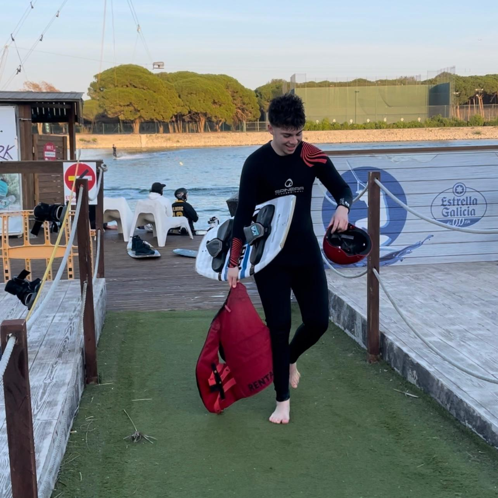

Marc Garcia: Informatico
Soy Marc García Bardales, tengo 18 años y estudio SMX2. Soy una persona trabajadora y con iniciativa. Dispongo del carnet de conducir B Uno de mis puntos fuertes es la organización del trabajo y la comunicación.
Hobbies
Como hobbies principalmente tengo el futbol, pero también me gusta mucho el mundo del motor. Llevo jugando a futbol desde los 5 años. El jugar a futbol desde los 5 años dice mucho de mi, me describe como una persona persistente y que no abandona algo por mas problemas que se le interpongan en el camino